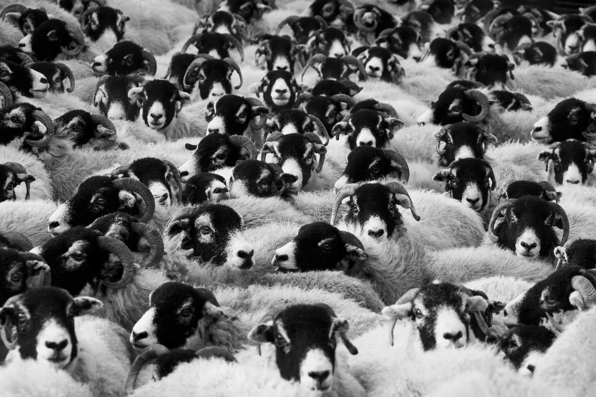

This section takes a dive into the crops that are being grown throughout Missouri. Some of these include the start of growing Hemp, the growing popularity of rice and more.

The animals are a major part of agriculture in the state. Missouri farmers are finding ways to decrease livestock-related costs, and increasing the health of the animals.

The people and the community around farming are just as important as the crops. Learn about women in agriculture, service dogs and the effects of flooding on the community.
Technology is always advancing, and that includes tech in agriculture as well. Some topics include GPS for cows, replacing fossil fuel and robots.
There is constantly new informaiton coming out about the farming industry and ways to improve. We looked at research surrounding plants, agroforestry and Japanese beetles.